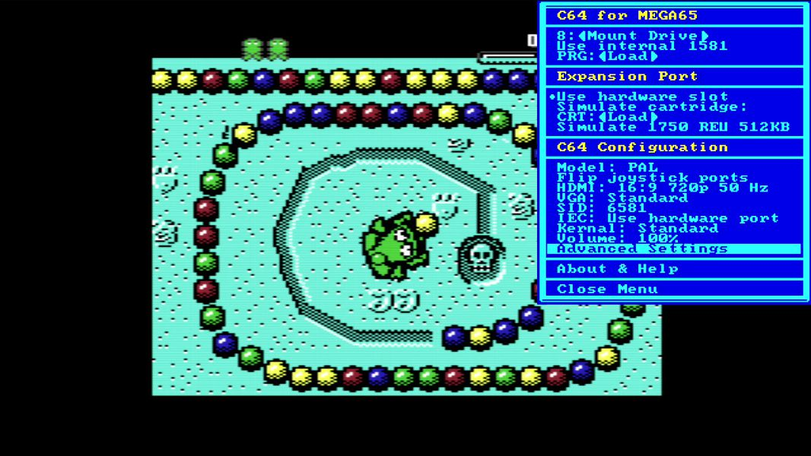
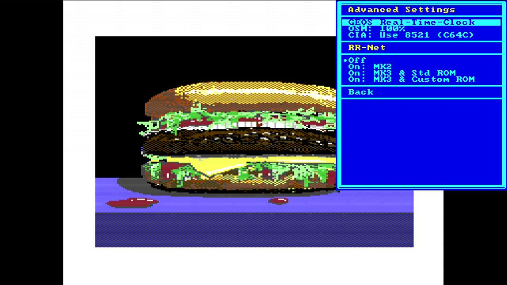

Work in Progress
Work has started on a 6.0 version of the C64 core. A release is planned for late 2026 or early 2027. This page gives you an overview on new features as well as download links for untested Alpha versions.
The current Alphas focus on enhanced compatiblity especially with cartridges and also supports .d81 files in a new 1581 emulation, can read disks on the 3,5 inch disk drive and communicate with the Ethernetport via RR-NET emulation.

Download location
The current Alpha 20 version can be downloaded in the Discord Channel:
https://discord.com/channels/719326990221574164/801767398675316756/1558456850478010508
WARNING! DANGER! READ THIS!
A lot of C64 cartridges and other software will be buggy when the REU is turned on. Please make sure to only activate it when you know that the software or cartridge you are using actively supports it. Turn it off again when you do not need it. Anything that does not say “Works better with REU” should be considered incompatible with a REU.
Why are we yelling this? Because we ourselves have fallen into this trap during testing and chased non-existent bugs for a while. So this WILL happen to you too.
NEW CONFIG FILE NEEDED!
The .zip file of the Core, starting with version 6 Alpha 16, now includes an new, per-version config file that needs to be in the C64 folder of your SD-Card. This is important. And yes, every new version has it’s own config file, so please copy that file over every time you update to a newer Core Alpha.
Starting with Alpha 19, these config files have a .cfg extension.
Advantage: You can now change between the tested 5.2 core and the new Alpha core and they will not destroy each others configuration. Please do NOT use any of the older Alpha cores (V1-V15), as they make changes to the config file that are incompatible with 5.2.
PREPARATION OF NEW MENU STRUCTURE
This alpha core has some menu options that do not do anything, like a PAL/NTSC switch, a Turbo switch, and more. These are just placeholders and if it is not documented here or in the main docs, it currently is NOT available. Sorry for the confusion! Later revisions will grey out options that are not implemented yet (but we already are testing the menu).
List of new features (no particular order)
Simulation of two disk drives
You can now use to disk drives, #8 and #9. Both automatically switch from 1541 to 1581 and back depending on the image mounted. Also the drives can “switch off” if no image is mounted. This should be your standard option, as a drive on #9 can cause trouble with some games.
Mounted drives can now survive resets
For each of the simulated drives you can now turn off “Unmount on Reset” in the drive settings.
Read-Only support for the 3,5” drive
Core Alpha 18 and above supports reading of DD (720 KB) disks formatted for the 1581 drive on the physical drive. No writing is possible at this stage. JiffyDOS is supported if you legally own the 1581 JiffyDOS ROM. Please check for further instructions in the Discord: https://discord.com/channels/719326990221574164/794775503818588200
Emulation of RR-NET via Ethernet Port
Core Alpha 19 and above support using the Ethernet Port on the MEGA65 as a simulated RR-Net card inside the Core. This simulation can be turned on and off in the Advanced Settings. For more information about RR-Net we recommend this link: https://wiki.icomp.de/wiki/RR-Net

More filters for HDMI output
For HDMI-Output you can now switch to several filters that will make the picture “softer” like you would see it on an old CRT screen and video output. There are now eight settings to choose from to your personal taste.
Changes for physical cartridges
This version has massively improved hardware cartridge compatibility, thanks to many fixes that benefit cartridges beyond the ones we explicitly tested: more faithful timing on the Expansion Port (signals at the cart connector now reproduce real-C64 setup and hold relationships), and proper Ultimax-mode memory mapping (previously the C64 core saw floating data in some memory ranges instead of cartridge-provided RAM/ROM). Also DMA transfers are now supported so that physical REU units now work, as well as REU emulation cartridges (TeensyROM+, REUGrande, etc.). This should be the most compatible Cartridge port of any C64 recreation.
Core Reset when cartridge hardware changes
Whenever you turn the hardware cartridge port on or off, change the .crt file for an emulated cartridge or switch the simulated REU on or off, the Core will quickly reset. This on one hand avoids crashes when you change the configuration on a running system, and also duplicates real hardware, where you need to switch off the C64 to change a cartridge. But it’s a lot faster.
Changes to the simulated REU
The simulated REU can now be used in parallel with simulated or physical cartridges. This is very useful for some games, the Snappy ROM (see below) and the Final Cartridge 101%.
Also some register changes enhanced the compatibility, so the fREUd demo now works flawlessly. There are no known incompatiblities of the simulated REU to a real one.
Support for physical REU cartridges
The Core now fully supports DMA transfers, so it works with REU cartridges - but there are several issues.
General, non-demo REU use works
Software that just uses the REU without critical timing, especially GEOS, works well with any of the REU solutions (but Kung Fu Flash 2). Usually software that uses a REU can not be timing critical because one of the features of REU is to stop the whole C64 during memory transfers. Demo programmers have hard coded their timing so there are demos that require an EXACT REU implementation, and here you can run into the following problems:
Official Commodore REU hardware
These cartridges are old and we sometimes do see strange side effects that we right now only can attribute to slightly defective hardware.
REUGrande (new REU rebuild)
It generally works as well as our old (Core 5.2) REU emulation - which is slightly off so you see some artefacts in demos. We gave the REUGrande team the infos on what they need to change. So deviations you see are not caused by our Core. You can use our simulated Core for better timing.
TeensyROM+
The Plus version of the TeensyROM does have a REU emulation feature, but in our testing it slows down the whole machine and time sensitive demos will fail. The creator of TeensyROM+ is looking at this.
Kung Fu Flash 2
We so far were not able to find a Kung Fu Flash 2 cartridge that has worked with our Core. There are timing differences between different KFF2 manufactures that break compatibilty. Overall we can not recommend using KFF2 with a MEGA65 at this time.
…for Demos, use our REU instead
Basically unless you need more than 512 KByte REU memory, you are much better off using our simulated version then using a cartridge. It has accurate timing and does work with physical cartridges like Final Cartridge 101% too.
SRQ support for the IEC Bus
The IEC bus now has the SRQ signal wired into the Core. This is usually not needed at all on the C64 (only the C128 really supported the SRQ signal) but the Meatloaf cartridge actually requires it for it’s PTERM app - so it does work now.
Simulated Freezer Carts now use F9
Starting with this Alpha release, the Freeze function has been moved away from the Restore key to the F9 key. The Restore key now only issues an NMI like on a C64. This enhances compatibility with all known Simulated Freezers.
Final Cartridge 3 Support
The current Alpha release adds full functionality to the emulated .crt cartridges for the Final Cartridge 3.
We recommend visiting https://www.freepascal.org/~daniel/fc3/ to download the V2 .crt image and check out the documentation you can find there. This cartridge adds a lot of the features that you would expect when you have used the Freezer-feature on the MEGA65. Press F9 to access the features.
Please test the combo of the simulated REU together with this specific enhanced Final Cartridge Software. It allows something not possible before: Enter the monitor, make changes and jump back into the running program. This requires the extra REU memory.
Even without the simulated REU the cartridge freezer now works very well, allowing you to make “snapshots” of games that have no save function (PRG or D64 only - obviously this will not work with CRT files). Please note that freezing requires an empty mounted disk. More detailed instructions will be published soon.
SnappyROM and Super Snapshot
The current Alpha release adds the Super Snapshot and the SnappyROM to the list of emulated .crt cartridges. SnappyROM together with the emulated REU makes an excellent development system, check it out. To simulate the freeze button, tap the F9 key.
Action Replay support
The Action Replay .crt type should be working now. To simulate the freeze button, tap the F9 key.
MagicDesk 2 support
The current Alpha release adds support for the “MagicDesk 2” .crt format. This format is used for the SNK vs. Capcom project.
Wonderboy (OCEAN) support
Support for another .crt type - Wonderboy (Ocean) works now.
IDE64 Support
The IDE64 cartridge is supported by the current Alpha version of the Core. There is no IDE64-simulation, you need an actual interface cartridge. This is still experimental - we need data whether this fully works from users. Early feedback is great though.
.d81 / 1581 Support
The core can now mount .d81 images and also supports JiffyDOS on the 1581. You need to supply jd-c1581.bin in the C64 directory in the root of the SD Card. Of course, without that ROM you will have a standard 1581.
IDUN Support
The Idun cartridge, a project that marries a Linux-Raspberry Pi with the C64, is now compatible with the latest Alpha of the Core.
Real-Time-Clock Settings
In the Advanced Settings you can turn the GEOS-compatible Real-Time-Clock (synced with the RTC in the MEGA65) on or off. Some games will fail if the clock is on, as it uses the tape port in an unusual way. Unless you use GEOS regularly, it is better to keep this off.
More details about the RTC can be found here.
Audio Level Control
You can now set the Audio Level for the SID output inside the menu. Details on this to follow, but it works naturally - setting it to 50% makes the C64 sound about half as loud to human ears.
Proper C64 RAM initialization
The current Alpha core fixes the RAM state of the C64 at power on. It now has the famous “00 00 FF FF FF FF 00 00 00 00” pattern. This fixes some programs that rely on certain memory locations initializing to a 00 or FF (sometimes as copy protection), for example Q-Bert.
Other features planned
To see a list of features that are planned, please check out the list of issues labeled “V6” in the Github of the C64 Core. You can directly access this list here. This is not a guarantee that these features will be implemented, everything is under evaluation.